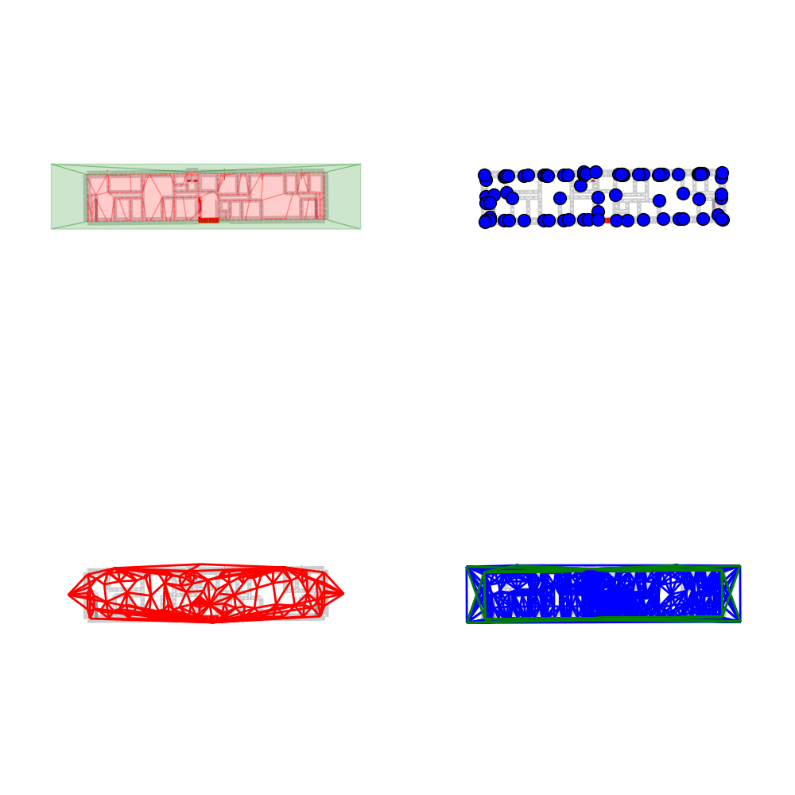

Building graphs of a Layout¶
Out:
no diffraction found. Yet computed ?
no Gv found. Yet computed ?
from pylayers.gis.layout import *
# Load the layout from its .ini file in $BASENAME/struc/ini
L = Layout('WHERE1.lay')
# Build all the graphs
# Check graphs
L._visual_check()
plt.show()
Total running time of the script: (0 minutes 4.992 seconds)
Download Python source code:
plot_exLayout2.py
Download IPython notebook:
plot_exLayout2.ipynb